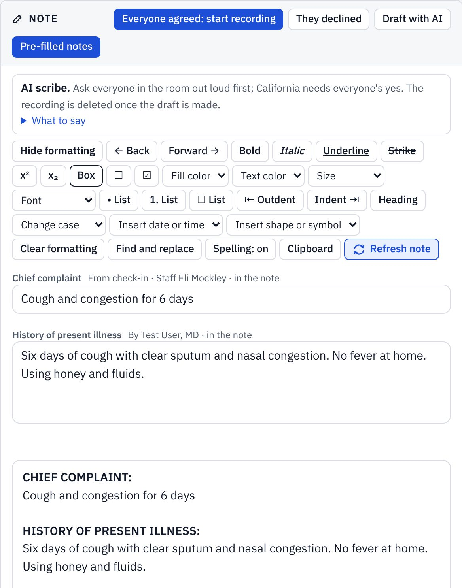
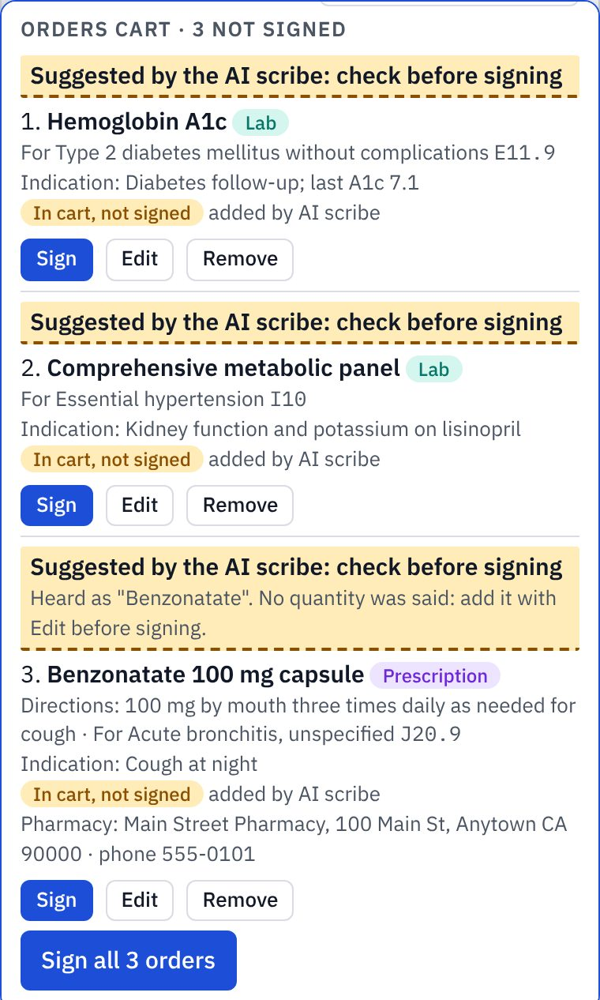
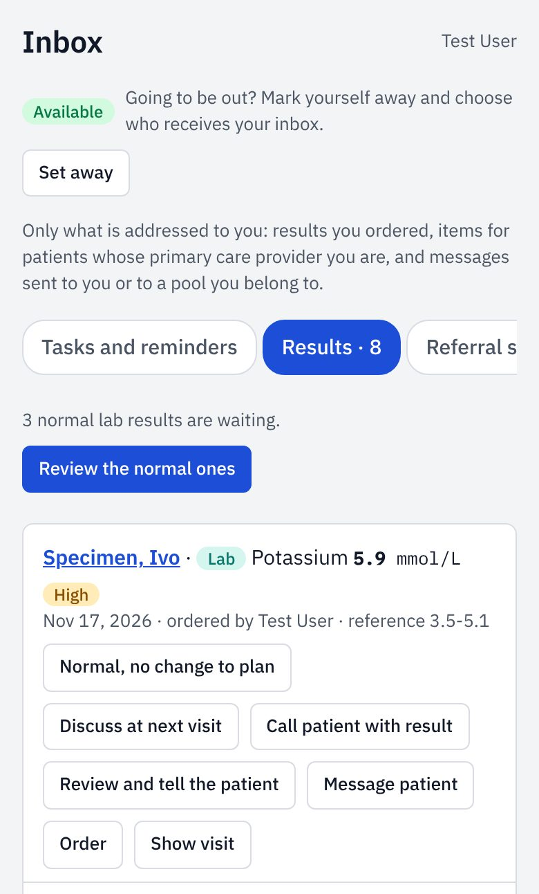
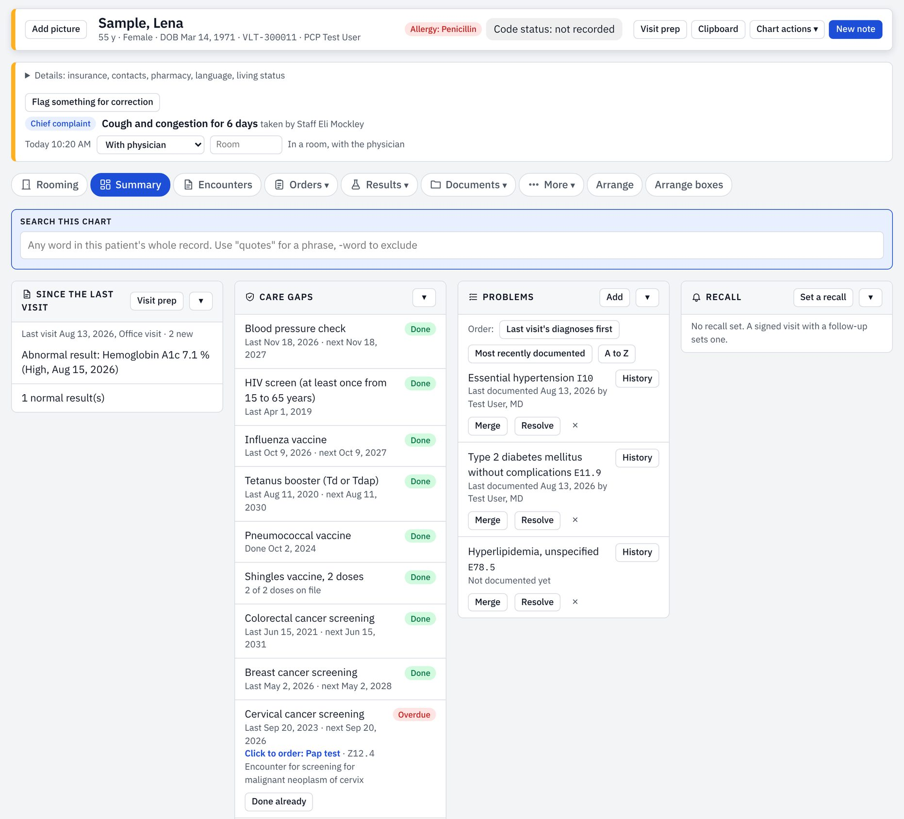
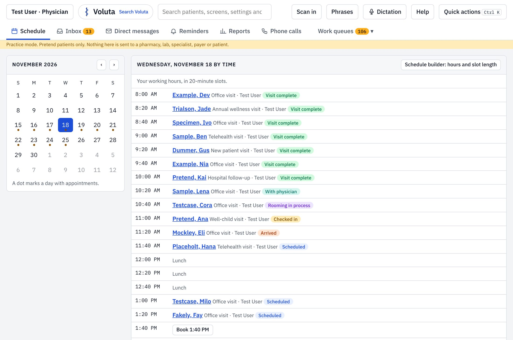

In development · Inviting California primary care practices to the pilot list
The AI drafts the visit. You decide what is signed.
Voluta is a medical record system for primary care, built by a practicing family physician. One tap starts the AI scribe, with everyone's consent recorded in the note, and its words stay marked until you review them. The chief complaint and history are kept for every visit. Every result is followed until someone closes it. California's rules are built in, not bolted on.
Read aloud by your device's own voice, with the words on screen. Nothing plays until you tap; this page never uses your microphone.
Built by Dr. Reynaga, MD, MS, DABFM, a board-certified family physician.

Screens show pretend patients and pretend data.
Built the way a clinic actually works
Every part of Voluta came from a real clinic day: the huddle before the first patient, rooming, the visit, the results that come back after the patient leaves, and the office work around it.
to start the AI scribe, with the consent question on screen and the answer recorded in the note.
The chief complaint, history, review of systems and exam boxes and the note stay in step by themselves.
followed from order to a closed loop, with critical results escalated until someone acts.
in the page. Records are encrypted, and every chart opened is in a sealed audit log.
AI scribe
The AI drafts. You decide.
What the AI scribe does
- Records only after a tap on Everyone agreed, and writes that consent into the note with the date, the time and who asked.
- Drafts the history, review of systems, exam and each diagnosis's plan from the visit conversation, into their boxes and the note at once. Nothing you wrote is replaced.
- Marks every word it wrote until a physician or APP reviews it. Signing asks first while any are left.
- In testingPuts the orders you said aloud in the orders cart, with their diagnosis, marked as its suggestion.
What it never does
- Signs, sends or places anything.
- Keeps the recording: it is deleted once the draft is made.
- In testingPends a controlled substance, or an order already in the cart.
No AI is perfect. Voluta's scribe is told to write only what was said, and everything it writes stays marked for you to check.
An illustration with a pretend patient. This is not Voluta itself, and nothing here is saved.
Tinted until reviewed
History of present illness AI draft: check before signing
Six days of cough with clear sputum and nasal congestion. No fever at home. Using honey and fluids.
She reports six days of cough, worse at night, with sinus pressure and clear nasal drainage.
Review of systems AI draft: check before signing
Respiratory: Reports cough; denies shortness of breath or wheezing.
One visit, one note
Walk through a visit
A pretend visit with a pretend patient, on Voluta's real screens. This page only shows pictures; it never uses your microphone.
Read aloud by your device's own voice, with the words on screen. Nothing plays until you tap; this page never uses your microphone.
No sound? Check the volume and any silent switch.
Pretend patient · Version in testing
-
Check-in and rooming
At check-in, the reason for the visit becomes the chief complaint, with the name of who took it. While rooming, the medical assistant can start a brief history.

-
Ask, then one tap
Before recording, the physician asks everyone in the room out loud, because California needs everyone's yes. Then one tap on Everyone agreed starts the AI scribe.
-
Consent in the note
The note records the consent, with the date, the time and who asked. The recording is deleted once the draft is made.

-
The draft, tinted until reviewed
Stop and draft puts the history, review of systems, exam and plans into their boxes and the note at once. The AI's words stay tinted until a physician, nurse practitioner or physician assistant marks them reviewed.

-
Orders wait for you In testing
In the version now in testing, orders said aloud wait in the orders cart, marked as the AI's suggestion. Nothing is placed until a physician signs.

-
Follow-up
After the visit, orders, results and recalls are tracked until each is closed.

Voluta is in development and is not yet used with real patients. California practices can join the pilot list below.
See it work
Real screens, pretend patients
These are Voluta's own screens, filled with invented patients for testing.
Ready before the first patient
The huddle lists what each visit needs before it starts.
- Care due: vaccines, screenings and annual wellness parts
- Results not yet reviewed, referrals still open, insurance not checked, an order waiting for a signature
- Visit prep: the plan from the last visit, ready to print


The whole patient on one screen
The chart opens on what matters today.
- What changed since the last visit
- Care gaps with one tap to order, and a problem list with each diagnosis's history
- Search the whole record, with quotes for a phrase


Results with one-tap next steps
Each result arrives with the actions a clinician takes most.
- Normal, discuss at the next visit, call the patient, review and tell
- Each test followed until someone closes it
- Critical results escalate until someone acts; the normal ones are reviewed together


Care gaps across the practice
Every screening, monitoring test and vaccine due, for every patient.
- Filter by gap, insurance or primary care provider
- One click places the order with its diagnosis code attached
- Mark "done elsewhere" with where and when
- The rules shown are simplified for testing and must be validated before real use


A schedule that knows the visit
Booking, check-in and rooming flow into the visit note.
- The reason for the visit and the chief complaint carry into the note
- Rooming status for each patient at a glance
- Blocked time, waitlist and reminders


Pick up where you left off
A draft visit opens straight into its note.
- Open encounter returns to today's draft
- Earlier visits open their signed note
- Drafts are saved as they are written and come back after a reload


Built for California
California's rules, built in
Small practices in California carry rules most systems leave to binders and spreadsheets. Voluta builds them into the day's work.
Recording consent
Everyone in the room agrees before the AI scribe records, and the note says when and who asked.
Penal Code 632See it in a visit →
Protected care kept separate
Reproductive and gender-affirming care is held apart from staff who do not need it, while prior authorizations and referrals still get worked.
California health privacy lawAI messages, disclosed
AI-written handouts carry the required notice in English and Spanish, with a way to reach a person.
AB 3030Vaccine fridge failures
A temperature excursion puts the affected lots on hold, with the VFC steps to follow.
VFC programSharps injury log
Each exposure recorded within the deadline, with the follow-up owed.
Cal/OSHA, 8 CCR 5193Prenatal care on time
A prenatal due list by gestational age, including the California Prenatal Screening Program.
CDPHSecurity and privacy
Designed to be trusted with a chart
An independent review of Voluta was done before any real patient, and its fixes are being made in order. A professional penetration test and an attorney's review come before the pilot.
Encrypted records
AES-256 encryption with the key kept in Google's Secret Manager, never on the disk with the data.
A sealed audit log
Every chart opened and every change is logged, sealed with a key and checked against copies kept off the server.
Each role sees its part
The front desk, billing, referrals and the clinical team each receive only what their work needs.
Sign-in that holds
Two-step codes, growing waits after wrong passwords, and a screen lock enforced by the server.
Backups you can restore
Nightly encrypted backups with a restore drill, and every release can be rolled back.
Tested before every release
Hundreds of server checks and thousands of browser test steps run in Chrome and Safari before each version.
This website sets no cookies and loads nothing from other sites. The spoken tour uses your device's own voice.
Roadmap
What's built, what's next, what's planned
Voluta is in development and is not yet used with real patients. Here is where it stands.
The clinic day
- AI scribe with recorded consent, drafting the whole visit
- One note per visit from rooming to signature
- Draft visits open straight into the note
- Diagnoses discussed but not on the problem list, offered to add or dismiss
- Team huddle, care gaps and recalls
- Results inbox with follow-up until closed
- Prenatal due list, wellness visits, care management
- Patient portal, standing orders and refill protocols
- Office safety checks, vaccine fridge, sharps log
Safety before patients
- Orders said aloud during a scribed visit, pended for the physician's signature (in testing now)
- Dictation of your own voice into any field, from the top bar
- Lab results filed on the server the moment they arrive
- Patient matching by record number, name and date of birth
- Prescribing checks for allergies, pregnancy and children's doses
- Privacy-law features: change history, self-pay restriction
- Independent penetration test and attorney's review
- A pilot with pretend patients, then a small live pilot
Connected care
- Electronic prescribing, including controlled substances
- Claims, eligibility and payment posting
- California's Data Exchange Framework and national networks
- CAIR immunization registry, two-way
- Electronic lab orders and results
- Spanish-language scribe visits and two-way texting
Pilot
Join the pilot list
We are looking for a few California primary care practices to help shape Voluta before it opens. Tell us about your practice and what you would want from your medical record.
The form opens a ready-to-send email in your email app. Please do not include any patient information.